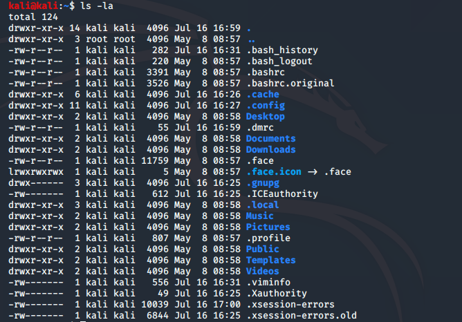
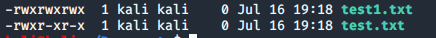
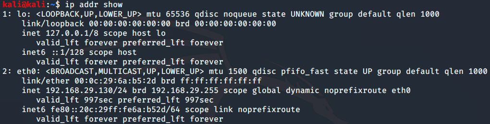

Linux
1 Navegando entre achivos
Consola > GUI
pwdnos dice en que directorio estamos. (PrintWorking Directory)cd(Change Directory)cd ..Nos manda a un directorio atras.cdSolo nos manda al directorio Home- Home =
~ cd directoriosi queremos ir a algún directorio
lsLista que hay en el directorio actual.ls -laMuestra directorios ocultos e información más detallada.- Los directorios ocultos empiezan con un
.
- Los directorios ocultos empiezan con un
Puedes autocompletar comandos y directorios con TAB, si no sale lo que esperas o no sale nada, estas en el directorio equivocado o algo estás haciendo mal :sad: .
mkdir nombre_del_directorioCon esto creas carpetas.cp archivo destinoPara copiar arcivos o directorios.rm archivoPara remover arcivos.rm -r directorioPara remover carpetas con carpetas adentro -r = recursive
mv archivoMover un directorio o archivo.locate archivoPara buscar un archivo en la PC.updatedbPara actualizar la base de datos del sistema.
man programaTe muestra el manual de el programa o comando que le pidas.
2 Privilegios y Usuarios.

Si empieza la linea con un:
des un directorio.-es un archivo.
rwx,r-x,r-x son los grupos de este archivo.
- El primer grupo
rwxson los permisos que tiene el dueño del archivo. - El segundo grupo son los permisos que tienen los miembros del grupo al que pertenece el dueño del archivo.
- El tercer grupo son los permisos que tienen los demás usuarios.
r= reead,w= write,x= execute.
Para cambiar los permisos de un archivo ocupamos chmod
chmod +rwx archivoAsi le damos todos los permisos que queramos a un archvo.chmod 777 archivoLe damos todos los permisos a todos los grupos.

chmod +rwx y a test1.txt se le aplicó chmod 777.
Para añadir usuarios usamos el comando adduser nombre e ingresamos la información que nos pide.
- Podemos ver todos los usuarios del sistema con el comando
cat /etc/passwd, las contraseñas están en/etc/shadow
encriptadas.
Podemos cambiar de usuario con el comando su usuario, si no le damos
ningún usuario cambiaremos al usuario root.
3 Comandos de red
ifconfig es el equivalente a ipconfig en windows, nos da un resumen
de la conectividad de la máquina.

ifconfig = =ip addr showiwconfignos da un resumen de las redes inalámbricas.ping Dirección_o_dominionos deja testear la conección con ese
dispositivo.
arp -aNos muestra la dirección IP a la que nuestra PC habla y la
dirección MAC asociada con ese dispositivo.
netstat -anoNos muestra las conecciónes activas en nuestra máquina.routeMuestra la tabla de enrutamiento.
4 Ver, Crear y Editar achivos
echo "mensaje" con este comando escribimos un string a donde queramos.
Podemos escribir directamente a un archivo con echo "mensaje" > archivo
- Con el operador
>>concatenamos el mensaje al final del archivo y con el operador>reemplazamos todo lo
que este escrito en el archivo con nuestro mensaje.
cat archivo cat = concatenar, concatena el archivo en la terminal, escribiendolo por
completo.
touch nombre_del_archivo Crea un archivo vacio con el nombre y la
extención dados.
5 Empezar y terminar servicios
Podemos crear un servidor local con apache o con python.
Si en la terminal ponemos service apache2 start podemos crear un web
server local.
Ahora si en el navegador de internet ponemos como dirección nuestra IP
(que podemos conocer con ifconfig) tendremos una pagina de bienvenida.
Para detener el server escribimos service apache2 stop.
Con python podemos escribir python -m SimpleHTTPServer 80 > -m para
acceder a los módulos y 80 porque es el puerto que utilizaremos. Con
esto abriremos un servidor local en el directorio en donde escribimos el
comando. y podemos acceder a el desde el navegador con la dirección IP,
y si estuviéramos usando un puerto que no fuera el 80 tendriamos que
agregarle a la IP :puerto
Para pararlo solo basta hacer ctrl + c en la consola para parar el proceso.
TODO: Inv como hacer un servidor FTP con python.
Pero podemos hacer que un servicio inicie al iniciar el sistema con systemctl.
systemctl enable nombre_del_servicio
enableCada vez que inicie el sistema inicia el serviciostartInicia el servicio.disableEntiendes verdad?.
6 Instalando y Actualizando Herramientas
Actualizar todo el sistema apt update && apt upgrade
Instalar un paquete sudo apt-get install paquete